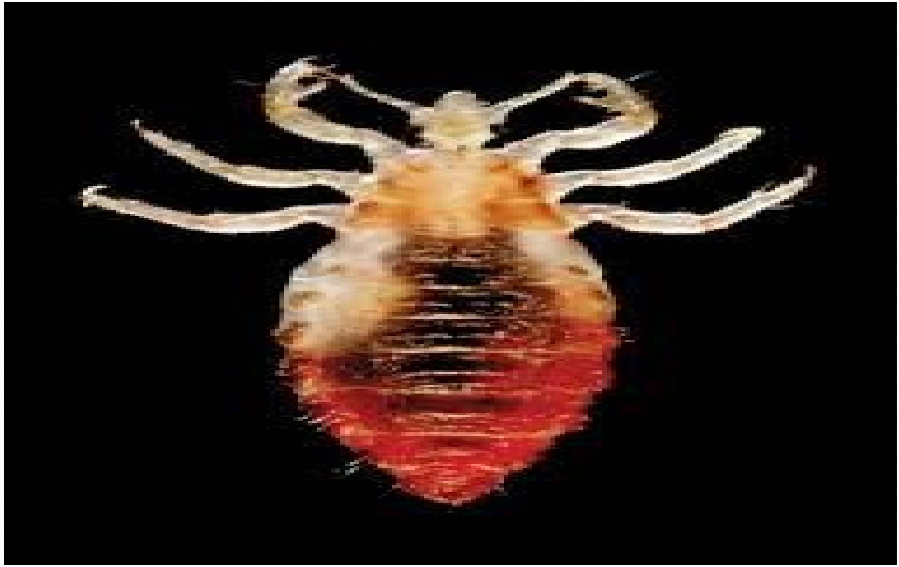

Environmental Sanitation and Control
Community Hygiene (Environmental Sanitation)
The goal of community hygiene is to keep the environment as safe as possible for human use. Environmental health programmes emphasize prevention, control, and reduction of health hazards. This involves promoting and maintaining good health standards. These programmes are coordinated with other health needs of the community, such as curative, preventive, and promotive health. Environmental sanitation programmes aim at reaching certain health standards on:
- Water supply
- Food hygiene
- Solid waste and water disposal
- Housing
- Control of vectors and rodents
- School sanitation
Water Supply
Pure water contains some mineral salts. It is clear, sparkling, colorless, and tasteless.
Water contaminants
- Disease producing organisms e.g. bacteria
- Parasites e.g. snails
- Chemicals from factories and farms - can be poisonous
- Vectors e.g. mosquitoes which breed in water
Water sources
- Surface water such as dams
- Springs
- Wells - deep and shallow
- Rivers
- Rain water
It is easier to protect water from contamination than to treat it when contaminated.
Methods of water purification
- Boiling: All water, apart from water from water works, should be boiled.
- Distillation: Steam is collected, cooled and condensed back to water.
- Natural self-purification: The 3-pot system. If water is allowed to stand, most harmful micro-organisms may die.
- Filtration: Can be done on a small scale for household use or large scale. A common filter is made of sand and stone layers.
- Chlorination: After filtration, chlorine can be added to kill remaining microbes (e.g., water guard).
Diseases associated with water
- Water-borne diseases: Water acts as a passive vehicle for the infecting agent (e.g., cholera, Typhoid).
- Water-washed diseases: Occur due to lack of adequate water (e.g., scabies, skin diseases).
- Water-related diseases: Occur because insects breed in the water (e.g., malaria).
Refuse Disposal
Types of Refuse
- Dry rubbish: Consists of tins, bottles, paper, dry leaves, dust, rugs etc.
- Vegetable and food waste: Consists of left over food, vegetables, peelings, garden weeds, fat and grease etc.
Methods of refuse disposal
- Compost pit: Wet waste is covered with soil or grass to decompose. Ready as manure after 3 months.
- Burning: Dry rubbish can be burnt.
- Burying: Rubbish can be buried.
- Controlled tipping: Used to fill unwanted gullies and depressions.
Process of waste management
- Segregation
- Handling
- Transportation
- Disposal
Waste Water and Excreta Disposal
Waste water disposal
Homesteads with piped water should have open concrete drains which lead to a soaking pit or kitchen garden. In markets and town centers, water should be drained into sewage works. Industrial waste may need chemical treatment before disposal.
Excreta disposal
- The pit latrine: Dug at least 20 meters from the house and 40 meters from a water source. Should have a concrete slab, be well ventilated, fly-proof, and kept clean. A Ventilated Improved Pit (VIP) latrine includes a pipe with a fly trap.
- Water carriage system: Common in towns, it's a convenient method using flush toilets connected to a sewage disposal system or a septic tank. The septic tank allows harmless fluid to flow away into a soak pit after bacterial action.
Housing and Planning
Lighting and Ventilation
Good light and ventilation are important to good health. A house should have adequate windows and safe lights. Natural light (sunlight) destroys bacteria and helps the skin make vitamin D. Poorly ventilated rooms increase the rate of infection with respiratory diseases.
Functions of a house
- Should provide comfort
- Provide health (promote)
- Enjoyment
- For making a home and rearing a family
A good house should have:
- Strong walls and a water proof roof
- Good siting and preferably be permanent
- Adequate water supply and safe excreta disposal
- Good lighting and ventilation
- Enough space for all the people (approx. 10 by 10 ft² per person)
Classification of houses
- Temporary houses: Easy to build and destroy, often with poor lighting and inadequate space.
- Semi-permanent house: Wooden or iron sheet houses that can last for 10 to 15 years.
- Permanent house: Built with bricks, seasoned timber, cement, and iron sheets, lasting over 25 years.
CONTROL OF VECTORS AND RODENTS
We need to control them in order to keep a healthy house which is free from insects, rodents and parasites.
Insects
- House flies: Spread diseases like typhoid, dysentery, and cholera. Control by destroying breeding sites, keeping latrines clean, and protecting food.
- Fleas: Can cause plague. Control rats and maintain cleanliness.
- Lice: Transmit typhus and relapsing fever. Control through personal hygiene and washing clothes. 
- Bed bugs: Cause irritation and lack of sleep. Control by keeping the house clean and using insecticides.
- Cockroaches: Contaminate food and can transmit typhoid. Control by keeping buildings clean and destroying them with insecticide.
- Mosquitoes: Cause malaria, filariasis, and yellow fever. Control by draining stagnant water, cutting grass, and using insecticide-treated nets (ITNs).
Rodents (Rats and Mice)
They are destructive and transmit diseases like plague, leishmaniasis, and typhoid fever.
Control Measures:
- Proper refuse collection and disposal.
- Keep vegetation short near buildings.
- Rat-proof food stores.
- Use pesticides, traps, or keep cats.